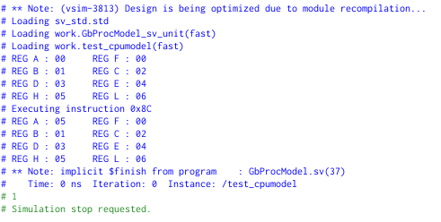
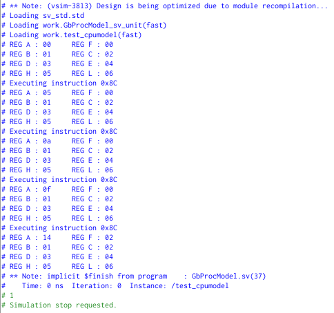

In larger design houses there is a strict separation between the designers and verifiers. Both are given a ‘requirements document’ and are not allowed to talk to each other. This is for the simple reason that having two independent interpretations might point out errors in each others’s interpretation (or in the ‘requirements document’).
A well-tested technique to obtain the right answer from a model. The stimuli, that are given to the DUT are also given to the model. The outcome of the DUT is then compared to that of the model. In an ideal scenario, both answers should always match.
As we have an OO-environment, it only makes sense to write the model in the same language.
The example below shows how the model could be developed.
/* A new class is made for the model :) */
class gameboyprocessor;
/* Eight 8-bit registers */
byte A;
byte B;
byte C;
byte D;
byte E;
byte F;
byte H;
byte L;
/* Upon creating an object, the registers
are initialised. A simplication was done,
because the LOAD instructions are not
implemented. Hence, all values are constant
(except for those of A and F).*/
function new();
this.A = 0;
this.B = 1;
this.C = 2;
this.D = 3;
this.E = 4;
this.F = 0;
this.H = 5;
this.L = 6;
endfunction : new
/* A simple to string function to
consult the internals. */
task toString();
$display("REG A : %02X \t\t REG F : %02X", this.A, this.F);
$display("REG B : %02X \t\t REG C : %02X", this.B, this.C);
$display("REG D : %02X \t\t REG E : %02X", this.D, this.E);
$display("REG H : %02X \t\t REG L : %02X", this.H, this.L);
endtask : toString
/* Here is the bread-and-butter of the
model. Similar to the DUT, an instruction
can be fed to the model. The model
performs the same operation on its
internal registers as the DUT. */
task executeALUInstruction(byte instr);
/******** content should go here ********/
endtask : executeALUInstruction
endclass : gameboyprocessor
/* A small program to test the model */
program test_cpumodel;
static gameboyprocessor gbmodel;
initial
begin
/* instantiate model */
gbmodel = new();
/* show the initial values of the register file*/
gbmodel.toString();
/* ADC H => A = A + H + Cin => 0 + 5 + 0 = 5 = 0x5*/
$display("Executing instruction 0x8C");
gbmodel.executeALUInstruction(8'h8C);
/* show the final values of the register file*/
gbmodel.toString();
$display("Executing instruction 0x8C");
gbmodel.executeALUInstruction(8'h8C);
gbmodel.toString();
$display("Executing instruction 0x8C");
gbmodel.executeALUInstruction(8'h8C);
gbmodel.toString();
$display("Executing instruction 0x8C");
gbmodel.executeALUInstruction(8'h8C);
gbmodel.toString();
end
endprogram : test_cpumodel
The gameboyprocessor model has 8 properties that represent the 8 registers in the registerfile. Upon making an object, these registers are initialised to the same values as the hardware.
Next, there is a toString() function that simply prints the values of all the modelled registers.
In this simple model of this simplified processor, the task that will do the heavy lifting is executeALUInstruction(). Note that this is a task and not a function.
Below the model, there is a small program which can be used to test the model. It simply makes an object of the class gameboyprocessor. It executes the ADC H instruction. The internal values of the registers are shown before and after the instruction.
The output of the program looks like shown below.

The result of REG A shows the expected outcome.
Running the same instruction 3 more times, should end up with the register A containing the value 20 (0x14). In the fourth instruction there is an overflow of the lower to the higher nibble (register A goes from 0x0F to 0x14). This is reflected in register F (bit-index 1).

Try to complete the executeALUInstruction(byte instr) function so an ADD H instruction can be execute in your model.